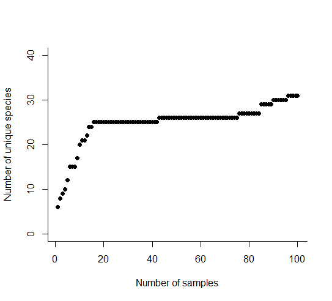

11 Measuring species richness
11.1 Cumulative species richness and sampling effort
When we sample a community to estimate species richness, we need to think about how our sampling effort changes what we can observe. If we put no effort in, we know that we don’t see any species. So how does the number of species relate to the amount of effort that we put in?
Using your LEGO communities as an example, think about taking a handful of bricks out of the bag. How many species do you find? Initially you might discover a lot of new species: for example, a first handful of ten bricks might give you 7 different shapes or colours of brick. If you took another handful about the same size, are they all the same ‘species’ as the initial seven? And, if not, how many new ones have you found? You are likely to find in your second sample that you find fewer individuals from as yet unseen species. If you were to keep sampling, would you find any more species?
The cumulative number of species found can be plotted against increasing effort, to get the characteristic curve called a species accumulation curve (Figure 11.1). The curve has an initial steep slope, as the species found at the beginning must be new to the record. As we take more samples, we start to see the same species reappearing. New species may continue to turn up, but they’re increasingly less likely. Even though we’re putting in more effort, our cumulative tally slows down. Eventually you may eventually conclude that you’ve got a good representation of the community, because the curve is tending to the horizontal. We can never be certain that we have sampled enough, and that we are not going to find a new species, but we can be reasonably sure.
{kind=link}
11.2 Species accumulation curves
In order to increase confidence in your estimates, we might sample a number of different sites across the community and record the number of species at each one. Combining the results can help us to analyse the data and make them comparable with other locations and studies. In a hypothetical field trip to the Island of Dragons, off the north-west coast of Scotland, we will walk through this method of data collection and analysis step by step to understand the benefits.
At site 1 (the rocky beach on which we have landed our rowing boat), we record a total number of six dragon species. Many of these individuals are from a more common species (species 6, a purple dragonfly, ten of whom are buzzing around our heads). However there are three individuals of species 1 (a yellow-bellied rock dragon) and species 5 (a pleasant turquoise cliff dragon). We also spot one or two individuals of three other species (Figure 11.2). This is our first record on the project sheet, so all of the species are new to our study.
{kind=link}
We walk up the beach and up a steep valley that leads into the interior of the island, and stop to take another sample. There’s a lovely view back to the sea, but we are far enough from the beach, and have travelled rapidly enough, that we are confident that we will only see different individuals here. At site 2 (the valley), we are still surrounded by purple dragonflies, and indeed five of the six species we saw on the beach are also visible here. However, in the undergrowth at the side of the path we find a deep blue dragon snake, and in one of the trees there is a violet humming dragon. We get very excited; they are extremely rare. In the valley (site 2) we have found seven species in total, two of which are new to the study. Our cumulative species count goes up from six to eight.
We take another short hike and emerge at the top of the valley, at the side of a scree slope. The purple dragonflies are menacing us, but no-one has been bitten yet. We are surprised not to see more than one yellow-bellied rock dragon, but there is a good show of turquoise cliff dragons. After a few minutes we spot a pink slow-dragon basking on a flat rock. That gives us four species for the site, one of which is new to our set of observations, and brings our total species count up to nine species.
We keep moving across the island, taking observations and counts in multiple locations. Our number of new species keeps increasing: by the fifth site (on the far side of Spiny Mountain, back in the scrub just above the treeline), we have seen 12 different species, although each site has an average of about six species within it. We take a lunch break and start to plot the number of unique species recorded against the number of samples that we’ve taken (Figure 11.3).
{kind=link}
Fired up by sandwiches and scroggin, and aided by a three day camping trip, we launch ourselves into more sampling. We repeat our counts at 100 sites across the island, in the hope that we will see patterns emerging in the dataset. There is likely a dominant species in this community – one species turning up in all of our samples.
By the 100th site, we have found 31 unique species even though each site has an average of six to ten species each (Figure 11.4). The rapid rise in the number of species at the start is followed by a long period of plateauing at approximately 26 species. Eventually we find a few rarer species; the discovery of an azure dragontoad hiding under a waterfall and the lime green wyvern will definitely help us get funding for the next field trip.
{kind=link}
{kind=link}

The species accumulation curve after 100 samples: purple dragonflies continue to be the most common species, but there are a lot of rare dragons and if we had given up after 60 samples we would have observed only 26 of the 31 we eventually found.The problem with our records is that they produce a ‘noisy’ curve. The individual sites with particularly rare species or even just a lot of species have the potential to affect the shape of the curve simply by the order in which we sampled them. If, for example, the weather had been different, or we had chosen a different path around the island, the order of the sampling regime would have been different and our species accumulation curve could have looked very different. This curve is known as a ‘collector’s curve’ – it is reflecting the one particular way in which the data were collected
11.3 Reordering, randomisation, and rarefaction
11.3.1 Reordering
Reordering the data differently produces a similar, but not identical, species accumulation curve. We see the same characteristic curve with a rapid rise at the beginning, followed by a slowing down, but the reordering doesn’t necessarily get the long plateau that we saw in our walk around the Island of Dragons (Figure 11.5). The end point is the same, but the curve is shaped differently. However, we are not getting much of use from a single reordering; we’re just going on a walk across the island using a different route. What we really want to know is, for a walk in any possible direction around the island, how many dragon species should we expect to see on average after 1, 10, 25 sampling sites?
{kind=link}
11.3.2 Randomisation
To try and reduce the bias that can come from the specific order in which we collect our data, we can re-order the data multiple times through a process called randomisation. We can then work out the mean number of observed species for a given sampling effort from lots of different sample orders, and we produce a smooth curve.
Randomisation is a tool that helps us to smooth out the data, and helps us to compare between communities. It is affected by the relative abundance of individuals of species in your community.
A short hop over the sea from the Island of Dragons lie Scaly Isle and Spiny Isle. These are both extremely well documented lumps of land, and the last population count indicated that both islets hold 50 individuals of five species of small, cold-blooded dragons (Figure 11.6). However, Scaly Isle is a very even community, with all species present occurring at the same frequency. Spiny Isle on the other hand is a very uneven community, with a lot of individuals from one species and very few individuals from the other species.
{kind=link}
{kind=link}
When we visit, we record the individuals one at the time in the order that we see them. On Scaly Isle, we meet all five species very quickly: our collector curve gets us to five species by the time we’ve sampled individual number 12, and we have reasonable confidence that there aren’t any more to find after sampling half of the population (Figure 11.7). On Spiny Isle, we don’t find all species until we sample the 40th individual, and cannot expect to do so with any reasonable confidence until we have sampled them all. If we didn’t know that there are only 50 individuals, we might even conclude that there are more species still to discover.
{kind=link}
Why randomise? When you have species data from different communities with similar sampling effort, randomization gives you a smooth curve that is easier to compare between communities, and less subject to random biases. The shape of the species accumulation curve helps us to distinguish between communities. Randomisation gives us more confidence that the differences are real, and helps us draw conclusions about the species richness of a more fully surveyed community (Figure 11.8): if the sampling effort doubled, how would that affect the observed species richness?
Because randomisation keeps the collection of individuals and species found in any one site or sample together (just reorders these), it preserves the spatial differences and distribution of species among sites. For example, if some sites are particularly different, e.g. one site only has very rare individuals, or where there’s a large jump in diversity in a single site, then it will appear in your randomized data, acknowledged in the width of the confidence intervals around the mean.
11.3.3 Rarefaction
Rarefaction is a process that allows us to use information about species and samples to estimate the species richness of a smaller sample. It uses information about the abundance of each of the species in an observed sample to calculate the chance of observing some number of species in a smaller sample (Figure 11.8). For example, on the Island of Dragons, we collected data from one hundred sample sites. If we want to compare that to a historical study that only sampled fifty sites, or perhaps compare species richness on this island with another further up the coast, we can use a process called rarefaction.
{kind=link}
Rarefaction can be carried out using the following equation. You don’t have to memorise it, or even calculate it yourself, but it will help you understand how it works if you can see how it is put together:
$$ E(S_n) = K - ({N n})^{-1} _{i = 1}^{k} ({N - N_i n})
$$
Here, the number of unique species in any subsample of size n is \((S_n)\). The expected number (on average) of unique species in a subsample of size n is \(E(S_n)\). This is equal to the total number of unique species in the whole sample (K), minus the chance that any or each species is not represented. This is calculated taking into account:
- How many ways there are of choosing n individuals from your total N individuals (“N choose n”): \(({N \over n})\)
- How many ways there might be of doing this for every one of the K species (\(\sum_{i = 1}^{k}\))
- And, if the individuals from species i are removed (\(N - N_i\)), how many ways are there of picking n individuals from the remainder: \(({N - N_i \over n})\)
Thus, the equation accounts for the problem that if you have lots of rare species, it is fairly easy to pick a sub-sample and miss some of your species. If your community is quite even, it’s less easy to avoid those. Our understanding of commonness and rarity of species from the relative abundance of the larger sample allows us to ‘backtrack’, and say that if we only sampled 50% of the community, how many species are we likely to find?